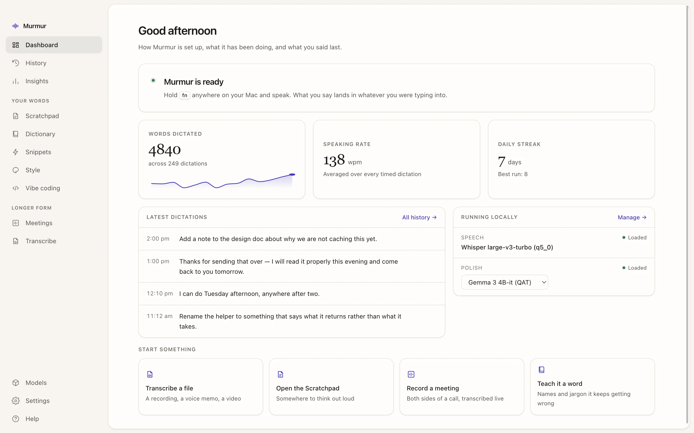
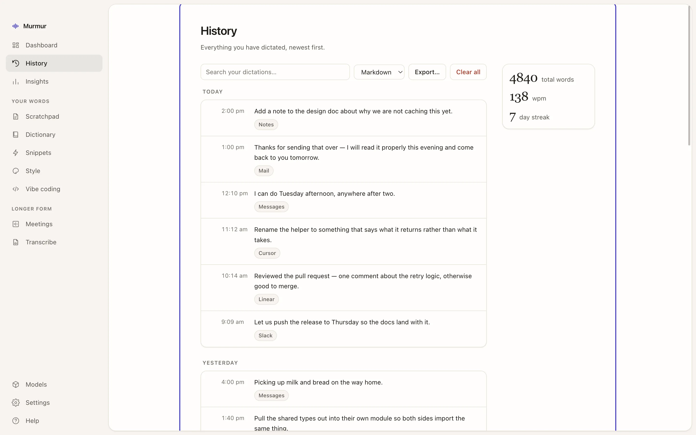
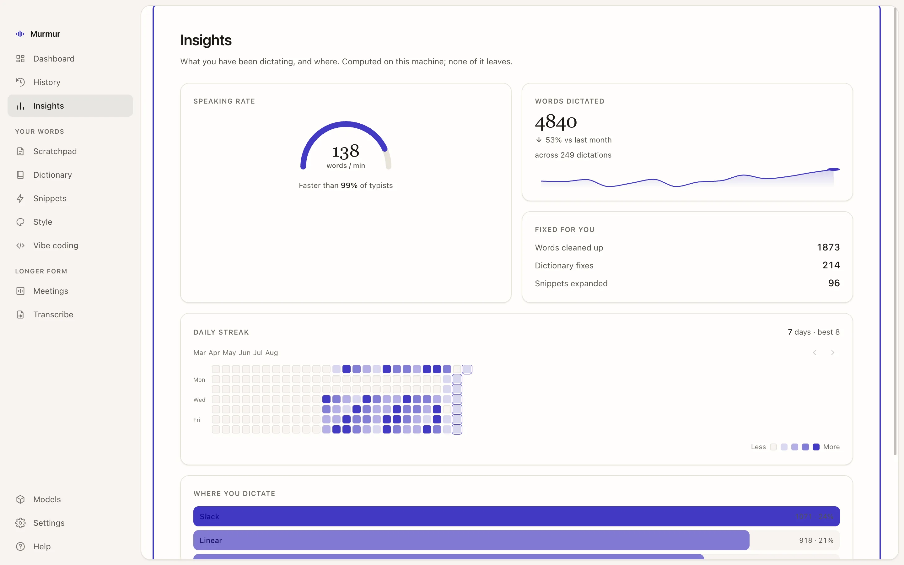
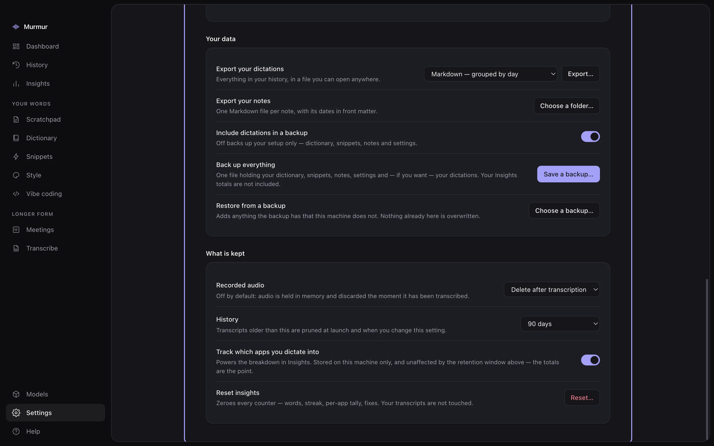
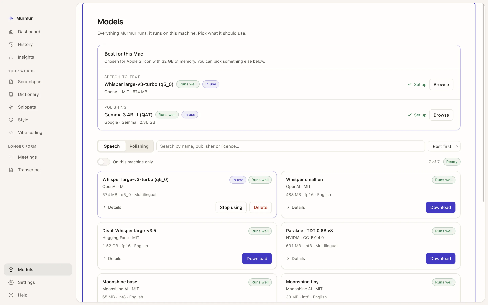
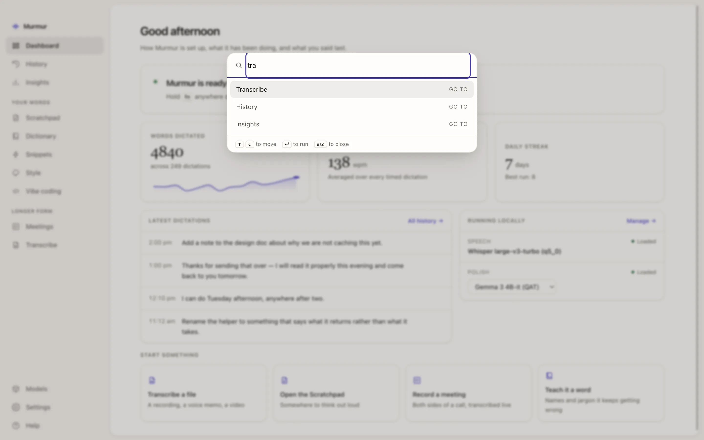

A dictionary that sticks
Teach it the names, jargon and acronyms it keeps getting wrong. They steer the speech model and the polishing pass, so the spelling holds.
Local dictation for macOS
Hold one key anywhere on your Mac and talk. Murmur transcribes what you said, tidies it up, and types it into whatever you were already working in — a message, an email, an editor, a search box.
All of it runs on your machine. There is no account, no server and nothing to upload.
To: Priya
Resting — 44 × 8 pixels
How it works
No window to open, no button to find, nothing to paste. The only thing that changes on your screen is a sliver of a pill at the bottom, and then your words.
fn by default — or right ⌘, right ⌥, or one you pick. It works in every app, including the ones with no dictation of their own.
Ums, false starts and second thoughts are fine. A small language model cleans the transcript into the sentence you meant, in the tone that suits the app you are in.
The text is typed in where your cursor already was. A copy lands in your history in case you want it again.

What it does
The transcript is the beginning, not the end. Murmur knows the names you use, expands the phrases you repeat, and writes differently in Slack than it does in email.
Teach it the names, jargon and acronyms it keeps getting wrong. They steer the speech model and the polishing pass, so the spelling holds.
Say a short phrase, get a stored block of text — a calendar link, an address, a standard reply. Expanded after polishing, so it lands exactly as written.
Punctuation, formality and emoji set separately for work, email, personal and everything else — picked from whichever app is in front.
In VS Code, Cursor and Windsurf it reads the identifiers and filenames in front of
you, so useNotes.ts comes out spelled that way.
Record a call and transcribe it as it happens — both sides — straight to a Markdown file you own. Audio only; your screen is never captured.
Drop in a voice memo, a podcast or a video. MP3, MP4, WAV, FLAC, Opus, MOV and more, decoded and transcribed without leaving the machine.
A floating window one click from the pill, for the thoughts that have nowhere to go yet. Searchable, pinnable, and untouched by the history retention window.
A command palette that goes anywhere in the app, and full-text search across everything you have ever dictated.


Privacy
Not as a policy — as an architecture. There is no account to make, no server to talk to and no network call in the dictation path at all. You can read the code that proves it.
Speech recognition and polishing both happen on your own hardware, through whisper.cpp, llama.cpp and ONNX Runtime. Murmur talks to them over loopback, and to nothing else.
Not by default. The microphone stays warm for a few minutes around a dictation so the first syllable is never clipped; that audio lives in a rolling buffer of about 300 milliseconds and is continuously overwritten.
Input Monitoring lets Murmur notice your dictation key being held anywhere on the system. The tap is listen-only and matches the one key you chose. No other keystroke is read, stored or sent anywhere.
Accessibility is used to type the finished text where your cursor is. Murmur looks up which app is frontmost — the bundle id, nothing else — to pick a tone.
The catalog ships with the app. Each download is pinned to an immutable revision and verified against a published SHA-256; a moved file is a failed download, not a silent swap.
History as Markdown, CSV, JSON or text. Notes as Markdown files with their dates in front matter. Or one backup file holding the lot, restorable anywhere.
The two exceptions, stated plainly. Checking for an update contacts GitHub, because that is where the update is — you can switch it off. And if you turn on meeting capture, Murmur records the other side of a call; it asks first, captures audio only, and writes the transcript to a file you choose.

Models
Seventeen models across speech and polishing, every one of them running locally. Murmur opens with a single recommendation sized to your actual memory, and the rest are one search away — filterable by publisher and by licence, which is what people actually filter by.


Download
Grab the disk image, drag it to Applications, and hold your key. First run walks you through the permissions and downloads a model sized for your machine.